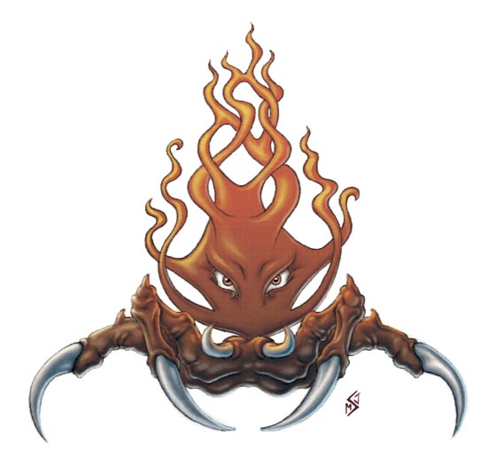

Le culte du Dragon
Cette page présente le culte du Dragon AVANT l’événement de la Tyrannie des Dragons.
Plusieurs religions affirment que les dragons sont destinés à gouverner le monde, mais aucune ne pousse cette croyance à l'extrème comme le fait le culte du Dragon. Bien que pour ce dernier, seuls les dragons morts-vivants sont vraiment immortels et méritent ce destin. Alors, afin d'aider un peu le sort, le culte tente d'influencer certains dragons de se convertir en dracoliches, que la secte appelle les Sacrées. Les adeptes vénèrent les dragons comme des dieux, et plus d'un dragon a déjà accepté la proposition d'immortalité qui lui était proposée.
Le culte
Un demi millénaire s'est écoulé depuis que le culte du Dragon a été fondé par l'archimage dément Sammaster. Celui-ci a d'abord rassemblé de nombreux fidèles attirés par ses visions illusoires qui prophétisaient la domination éternelle des dragons morts-vivants sur terre. Puis il trouva la formule pour créer sa première dracoliche, formule qu'il consigna dans son ouvrage intitulé le Livre des Dragons. Sammaster est aujourd'hui mort, mais son sinistre héritage perdure.
Le culte du Dragon nécessite de nombreux biens exotiques pour réaliser ses sombres rituels, ce qui en d'autres termes signifie qu'il a constamment besoin d'argent. Aussi, le culte peut autant être considéré comme une organisation criminelle marchande que comme une cabale de magiciens. Certains de ses membres sont de respectables commerçants qui utilisent leur argent pour financer les projets du culte, d'autres s'engagent dans des activités criminelles allant de la prostitution et des jeux clandestins à la contrebande, en passant par le chantage, l'extorsion et l'enlèvement. Certaines cellules se spécialisent dans le banditisme et l'espionnage.
Organisation
Extrêmement secret, le culte du Dragon maintient une toile vaguement connectée de cellules autonomes. Ses convictions et ses méthodes étant mal vues dans la plupart des nations civilisées, le culte utilise ordinairement des couvertures et des dupes pour détourner l'attention de ses vrais objectifs.
Dirigeant. Le culte n'a plus de vrai dirigeant, mais une dracoliche nommée Anabraxis la Griffe Noire est vénérée comme l'autorité ultime du groupe. Le repaire d'Anabraxis se trouve dans l'abîme sans fond de Lorosfyr, dans les profondeurs de l'Outreterre.
Siège principal. Le poste avancé le plus connu du culte est la Maison du Dragon dans le Murghôm. Il existe aussi une forteresse au Puits des Dragons (voir ci-dessous). Le culte recrute également pour son académie des Wyrms, cachée dans les ruines d'Unthalass en Tymanther. Il maintient aussi Redhorn, une place forte dans les montagnes de l'Échine du Dragon.
Hiérarchie. La plupart des membres de la secte fondent leur position sur les buts et les objectifs de leur propre cellule. Peu se réfèrent entre eux par des titres religieux. Quelques cellules ne confèrent qu'un seul titre aux membres dirigeants. Ce sont les Porteurs du Pourpre, nom qui provient de la couleur des robes de cérémonies. Plus une cellule est petite, moins elle possède de Porteurs du Pourpre, certaines n'en possédant même qu'un seul. La plupart de ces dirigeants possèdent le secret de la création des dracoliches. Ils contrôlent également le trésor de la cellule, dirigent la récollection des richesses et créent des objets magiques, tout ceci dans le but de soudoyer les dragons. Si la taille d'une cellule diminue trop, les Porteurs du Pourpre coordonnent alors le recrutement. Ce sont également eux qui dirigent la cellule lors des affrontements avec les ennemis.
Membres. Malgré son goût du secret, le culte du Dragon a toujours besoin des nouveaux membres pour exécuter ses projets. Il recrute la plupart de ceux-ci parmi les parents et les connaissances des membres actuels, mais va également silencieusement dénicher des candidats idéaux qu'il formera patiemment durant l'initiation. Le culte recherche des individus capables dans tous les domaines, mais préfère ceux qui possèdent un talent dans le secteur financier. Il tient par ailleurs en haute estime ceux qui ont le pouvoir de maîtriser et exécuter les rituels exigés pour créer une dracoliche. Le culte soudoie ces potentiels Porteurs du Pourpre en leur donnant accès aux légendaires travaux de Sammaster. En fait, de nombreux membres de la secte joignent l'organisation seulement pour le pouvoir et l'or. D'autres sont juste moralement laxistes ou apprécient les rites macabres. Ceux qui ont la chance de voir une dracoliche ou d'en observer une deviennent souvent de vrais croyants fanatiques.
Le puits des Dragons
Le culte peut se prévaloir d'une alliance effrayante avec les êtres draconiques. Bien qu'en fait peu de cellules soient centrées autour d'une Sacrée, de fréquents accords avec le culte peuvent finalement mener à une dracoliche.
Quelques dragons vivants s'allient avec le culte, intéressés par sa philosophie et son pouvoir, et les membres de la secte qui cherchent à les recruter leur servent volontiers d'agents.
Le culte du Dragon possède un nombre sans fin d'alliés morts-vivants, et quelques Porteurs du Pourpre sont eux-même des morts-vivants doués de sensations.
Au nord des montagnes du Couchant, dans les contrées du Mitan occidentales, se trouve un volcan éteint connu comme le Puits des Dragons. La légende dit que c'était autrefois le cimetière des dragons, là où les vieux dragons venaient mourir. Cette histoire est vraie. Le culte du Dragon a trouvé le Puits des Dragons et libéré son ancien gardien, une ombre dragon morte-vivante. Et malgré la résistance de nombreuses factions, le culte a construit une forteresse sur ce site, gardant l'entrée souterraine laissée par le volcan. Bien que la plupart des vieux dragons aillent maintenant ailleurs rendre leur dernier souffle, quelques-uns viennent toujours au Puits des Dragons, négocier leur immortalité.
A l'intérieur de la citadelle et de ses niveaux souterrains, le culte a ammassé de nombreux trésors abandonnés par des dragons mourants. Il maintient également une vaste pièce appelée la Chambre d'Ascension, où le rituel pour transformer un dragon en dracoliche est exécuté. Le Puits des Dragons est lourdement gardé, car il subit les assauts continus de la part de chasseurs de trésors, d'espions et de dragons outragés. Éminents parmi les sentinelles du culte on trouve Arsekaslyx (une femelle dragon rouge adulte), Amnemis (une femelle dragon noir adulte) et Enixtryx (un mâle dragon noir adulte). Le seigneur du Puits des Dragons est Naergoth Bladelord, un humain chevalier de la mort. Son égal, et maître de cérémonie du Puits des Dragons, est la liche Vargo l'Anonyme. Quand il était humain, Vargo a exécuté un rituel pour s'insuffler le sang d'un dragon noir. Ses pouvoirs résultants se basent sur l'acide, et les dragons noirs du Puits des Dragons lui sont entièrement dévoués et loyaux.